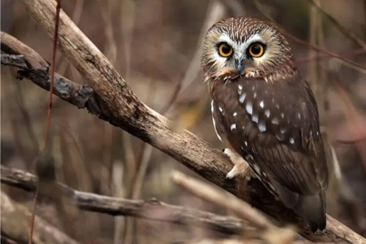

The Northern Saw-Whet Owl, a petite species of owl commonly found in North America, including the state of Minnesota, is celebrated for its elusive nature. This owl displays a unique and captivating appearance, characterized by a circular cream-coloured face embellished with streaks of brown, accompanied by a sharp dark beak and striking yellow eyes.
Its underbelly boasts a delicate white hue adorned with intricate brown markings, while the back and wings present a deep brown colour adorned with brilliant white spots. The name “Northern Saw-Whet Owl” is believed to stem from its distinctive call, which closely resembles the sound of a saw being sharpened on a whetstone.
The Northern Saw-Whet Owl, a petite avian species, forms monogamous pairs during the breeding season, typically commencing in March. However, males may engage in polygamous mating when ample prey resources are available. These owls commonly nest in pre-existing holes, such as those created by woodpeckers, or seek refuge in man-made nest boxes, demonstrating resourceful nesting behaviour.
In the region of Minnesota, the Northern Saw-Whet Owl sustains itself primarily by preying on small mammals such as voles, mice, and shrews. Additionally, they exhibit a diverse diet that encompasses insects, birds, and other diminutive creatures.
Equipped with keen hunting skills, they employ their sharp talons and beaks to capture prey, even within confined spaces and are capable of tackling creatures larger than themselves.
Despite their widespread distribution, the Northern Saw-Whet Owl faces threats stemming from habitat loss and competition for nesting sites posed by other avian species and squirrels. Their small size renders them vulnerable as prey to larger birds.
Nevertheless, the species currently maintains a classification of “Least Concern” on the IUCN Red List, indicating that its overall conservation status is relatively stable.